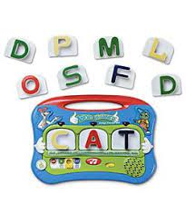
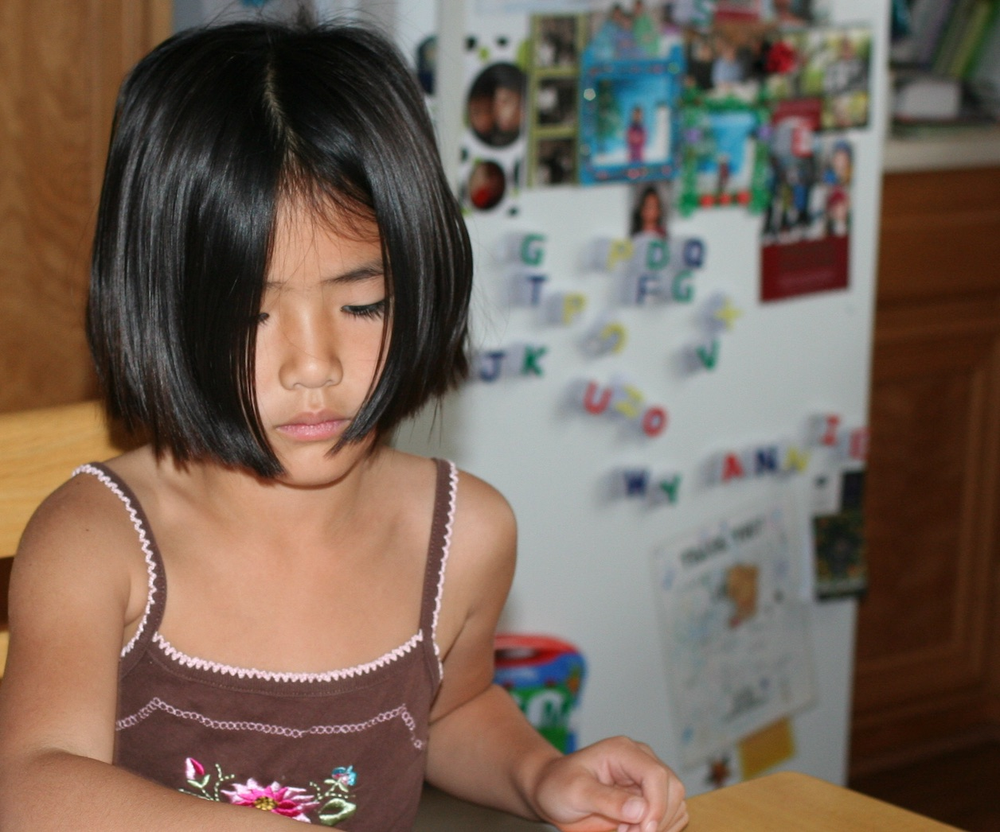

Thank you to my middle/high school bestie Teresa Liang for letting me use her personal website as a template for this documentation site :))) She is a CS pro which is why this site looks decent at all because I have very limited coding knowledge. Here is her site: https://teresa-liang.github.io/
I did not fully think this through, I think, and so I ended up spending many many hours changing her original website so that it would work for my purposes. The last time that I made a website was when I took CS50 my freshman fall. I do not really remember much from it (and probably did not really understand it well in the first place), but I think a little bit of it is coming back to me (yay)! Teresa's site is all contained on one page, so clicking the navigation bar at the top makes the page automatically scroll down to the appropriate section on the site--I had to change this a bit, since we are supposed to have a separate about page and final project page. I also simplified a lot of the different sections/divisions on the page and did my best to delete any extra pieces from the html and css code.
Project Brainstorm
Kindergarten game?
Since I am interested in going into elementary education after college, I am thinking of creating some sort of simple math game as a teaching tool for students at the kindergarten level. I really liked the Blocky Coding project that was shown in class and how it took something that is not usually a physical object and made it into one. My current idea would be to create a small device that you can put different number pieces or math functions into to create a simple math equation, and then indicate if the equation is true or false. I am envisioning this to look similar to a leapfrog alphabet toy that I used a TON when I was younger:


(hard to see but the Leapfrog Word Whammer is on the fridge in the background...I couldn't find a photo of me actually using it)
A more personal use idea would be something to do with an automated snack dispenser that would lock for a certain amount of time after dispensing food. Hopefully this would stop me from eating 5 granola bars in a row like I did yesterday.
(Combination???)
Probably a bit too much for me to do, but I could maybe combine the simple math game and snack machine ideas so that the game will reward the player with food when they correctly insert a math equation.
Crochet Counter
I also really love to crochet, so it would be cool to make something that would help with that. One thing when crocheting that can be kind-of tiring is counting stitches--it would be cool to make a machine that can count stitches for me as I am working, maybe by detecting how much yarn I have already used.